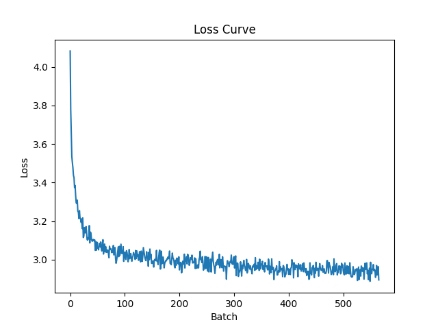
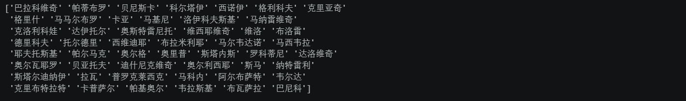

本期内容
- 任务概述
- 核心思路
- 代码实现
任务概述
目标：给定一个人名列表，训练一个 Decoder-only Transformer 模型，使其学会人名的“规律”，然后能用这个模型自动生成新的、合理的人名。
核心思路
Step1：数据处理
第一步是数据处理。人名是字符串，计算机不认识，所以要先建一个词汇表，把每个字符映射成一个数字编号。词汇表里除了名字里出现的字符，还要加上三个特殊标记：PAD 用来把不同长度的名字补齐到一样长，BOS 放在每个名字的最开头告诉模型从这里开始，EOS 放在末尾告诉模型到这里结束。然后构造训练数据的时候，要用 Teacher Forcing 的方式，把 input 和 target 错开一位，比如输入是 BOS 加名字里的字，目标就是名字里的字加 EOS，这样模型在每个位置的任务就是预测下一个字是什么。
Step2：模型定义
第二步是定义模型。模型的核心是一个 Decoder-only 的 Transformer。首先要有一个词嵌入层，把每个字符的数字编号转换成一个稠密的向量。然后加上位置编码，因为自注意力本身不感知顺序，需要用 sin/cos 函数把位置信息加进去。接着是带因果掩码的 Transformer 块，因果掩码保证每个位置只能看到它自己和它前面的字符，看不到后面的，这样才能在预测下一个字的时候不作弊。最后是一个输出投影层，把隐藏状态映射回词汇表大小，得到每个候选字的得分。
Step3：模型训练
第三步是训练。把处理好的数据送进模型，模型一次性算出所有位置的预测结果，然后计算交叉熵损失，忽略掉 PAD 的位置，反向传播更新参数。因为 Transformer 有因果掩码的保护，所有位置可以并行计算，不需要像 RNN 那样一个一个串行算，所以训练速度很快。
Step4：随机生成
第四步是生成。训练好之后，从 BOS 开始，把 BOS 送进模型，模型输出一个概率分布，从这个分布里采样或者直接选概率最高的字作为第一个字。然后把第一个字拼到 BOS 后面再送进模型，得到第二个字。这样一步接一步，直到模型输出 EOS 或者达到设定的最大长度为止。生成的时候可以用贪心解码、随机采样或者 Top-k 采样等策略来控制生成结果的多样性。
| 阶段 | 输入 | 输出 | 关键操作 |
|---|---|---|---|
| 数据处理 | 人名列表 | input/target 张量 | 分词、建词表、padding、错位构造 |
| 模型定义 | 无 | Transformer 模型 | Embedding、位置编码、因果掩码 |
| 模型训练 | input/target 对 | 训练好的参数 | 前向传播、交叉熵损失、反向传播 |
| 随机生成 | BOS 标记 | 新名字 | 自回归循环、采样策略 |
代码实现
Step1：数据处理
首先读取数据并进行分词，以及词频统计。
|
|
接下来构建词典，并构建转换函数。
|
|
Step2：模型定义
位置编码
|
|
Transformer 模型
|
|
Step3：模型训练
|
|
训练损失函数如下图所示：

Step4:随机生成
生成函数
|
|
生成结果
|
|
最终结果如下图所示：
